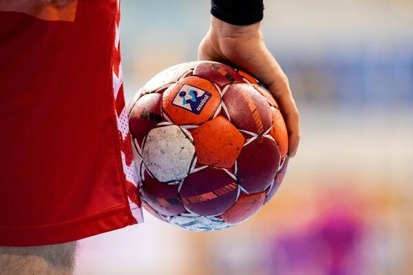
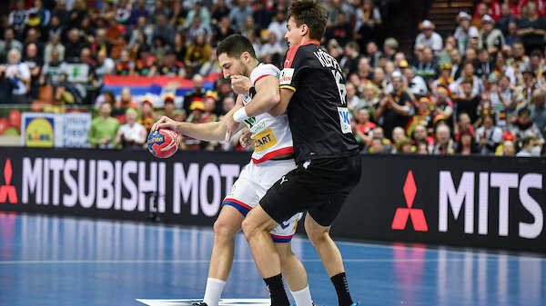

Рукомет (енгл. handball) je ekipni sport sa loptom, u kom se takmiče dve ekipe sa po 7 igrača (6 igrača u polju + 1 golman) na svakoj strani. Igra traje dva puta po 30 minuta, a cilj je dati više golova od protivnika. Lopta se između igrača dodaje rukama slično kao u košarci ali sa nešto manjom loptom i uz drugačija pravila vođenja lopte.
Moderni rukomet se obično igra u zatvorenim dvoranama, dok na otvorenom postoje varijante u oblicima velikog rukometa i Češkog rukometa (koji su se češće igrali u prošlosti), kao i rukometa na pesku. Američki rukomet i Irski rukomet su potpuno drugačiji sportovi od rukometa.
Igra je veoma brza i uključuje kontakt telom kada odbrambeni igrači pokušavaju zaustaviti napadače da priđu golu. Kontakt je jedino dozvoljen kada je odbrambeni igrač potpuno ispred napadača, tj. između napadača i gola. Bilo kakav kontakt sa strane ili otpozadi se posebno smatraju opasnim, i za to se dobijaju kazne. Kad odbrambeni igrač uspešno zaustavi napadača, igra se zaustavlja i tim koji napada nastavlja igru sa mesta prekršaja ili linije devet metara. Za razliku od košarke, gde je igračima dozvoljeno da naprave 5 faulova u igri (6 u NBA), rukometašima je dozvoljen neograničen broj prekršaja, koji remete ritam napadačkog tima i smatraju se dobrom odbranom. Rukomet je takođe veoma grub sport.
Golovi se postižu veoma često; obično obe ekipe postignu minimalno po 20 golova, a nije neuobičajeno da obe ekipe postignu i više od 30 golova. Ovo nije bio slučaj u ranijoj istoriji igre, ali je ofanzivna igra poboljšana od kraja 1980-ih, posebno korišćenje kontranapada posle neuspelog napada drugog tima, tako da je broj golova porastao.
Cilj igre je loptom pogoditi gol, tj. postići pogodak. Igra se po dva poluvremena od po 30 minuta, i ekipa koja postigne više golova je pobednik. Igrači smeju rukama dodirivati loptu i dodavati se međusobno, kao i šutirati prema golu. Svaki igrač sme napraviti do tri koraka držeći loptu u ruci, dok za svaki sledeći korak mora loptu voditi odbijajući je od poda, ili je mora dodati saigraču, ili šutnuti na gol.
Svi igrači se slobodno kreću po celom terenu, osim u prostoru 6 m ispred oba gola. U tom prostoru sme stajati samo po jedan član odbrambene ekipe koji se naziva golman. Ostali igrači smeju iznad prostora od 6 m pokušati uhvatiti ili dodati loptu samo u skoku, dakle za vreme leta.
Dve osnovne faze igre za svaku ekipu su faza napada i faza odbrane. U fazi napada igrači najčešće koriste formaciju s dva bočna igrača (levo i desno krilo), tri spoljna igrača (levi spoljni, srednji spoljni i desni spoljni) te pivot ili centar. U odbrani se koristi nekoliko različitih varijanti, koje označavaju način postavljanja tj formacije odbrambenih igrača ispred svog prostora od 6 m. Tako se na primer koriste odbrana 6-0 (šest igrača u ravni ispred crte od 6 m), zatim 5-1 (pet igrača u liniji te jedan ispred njih koji pokušava ometati organizatora igre protivničke ekipe), zatim 4-2 a ređe se koristi i formacija 3-2-1. Ekipa u napadu će zavisno od formaciji odbrane pokušati naći način da dođu što bliže golu u što povoljniju poziciju za šut na gol.
Odbrambeni igrači smeju do određene mere ometati napadače u pokušaju dodavanja lopte ili šuta na gol. Ukoliko pri tome koriste udarce ili grubo povlačenje protivnika jedan od dvojice sudija će dosuditi prekršaj. Za izrazito grube prekršaje može se dobiti kazna žutog ili crvenog kartona, isključenja na dve minute ili trajnog isključenja iz igre. Kod isključenja na dve minute ekipa nema pravo zamene isključenog igrača za vreme trajanja kazne. Prekršaj se izvodi s mesta gdje je napravljen osim u dva slučaja:
ukoliko je prekršaj napravljen u zoni deveterca a pritom nije bilo izrazite prilike za postizanje gola, dosuđuje se tzv. deveterac, koji se izvodi s isprekidane linije deveterca sa mesta najbližeg prekršaju ukoliko je prekršaj bio u zoni oko 6 m i to u trenutku izrazite šanse za postizanje pogotka (već upućen šut ili igraču koji je slobodan u izglednoj poziciji za šut na gol) dosuđuje se kazneni udarac sedmerac. Kod izvođenja sedmerca svi odbrambeni igrači moraju stajati iza prostora deveterca, a jedan napadač upućuje direktan udarac na gol s pozicije sedam metara.